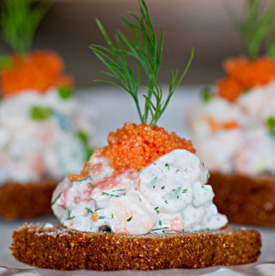

Toast Skagen

Description
Ingredients
- 200 g (7 oz) cooked peeled shrimp (preferably small Nordic shrimp or bay shrimp)
- 2 tbsp mayonnaise
- 2 tbsp crème fraîche (or sour cream)
- 1 tbsp finely chopped fresh dill (plus more for garnish)
- 1 tsp lemon juice
- 1 tsp Dijon mustard (optional but traditional)
- Salt and white pepper to taste
- 2 slices white bread (Brioche, sourdough, or toast bread)
- 1 tbsp butter, for frying
- 1 tsp grated horseradish (optional, for extra kick)
- Lumpfish roe or bleak roe (optional, for topping)
- Lemon wedges, to serve
Instructions
- Chop the shrimp roughly if they're large. Leave smaller ones whole.
-
In a bowl, mix:
- mayonnaise
- crème fraîche
- dill
- lemon juice
- mustard (if using)
- horseradish (if using)
- salt and white pepper
Then fold in the shrimp gently.
- Toast the bread in butter in a skillet until golden and crisp on both sides.
- Spoon the Skagen mixture onto the warm toast.
- Top with roe if desired, and garnish with more dill and a lemon wedge.
Home